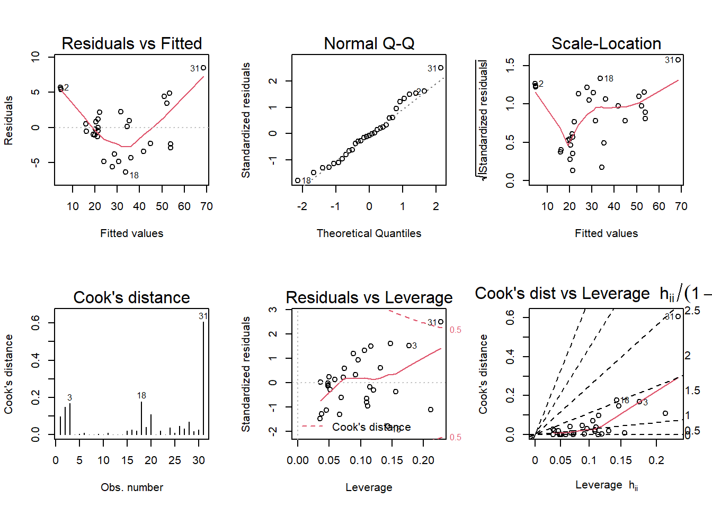
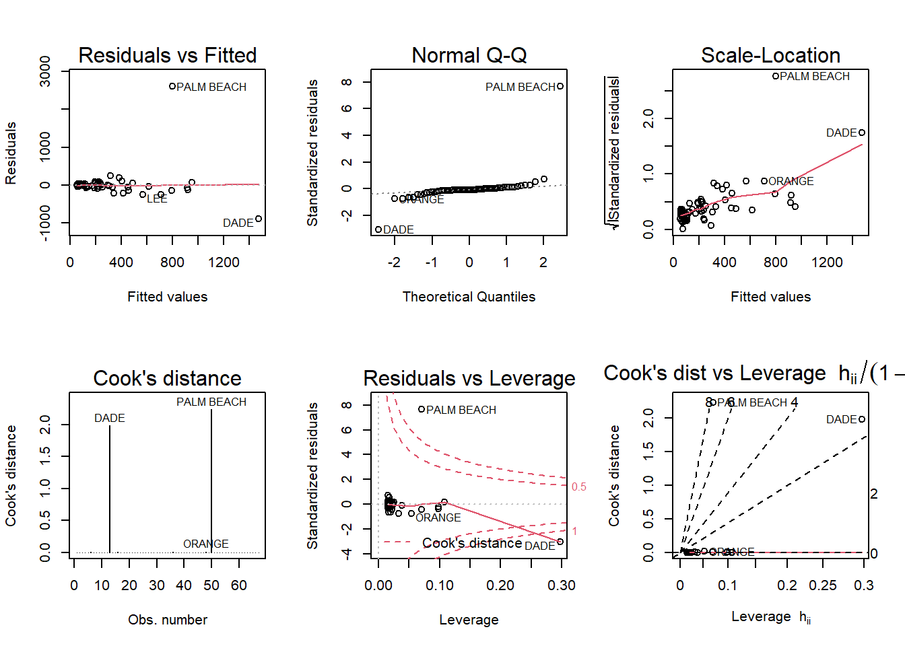
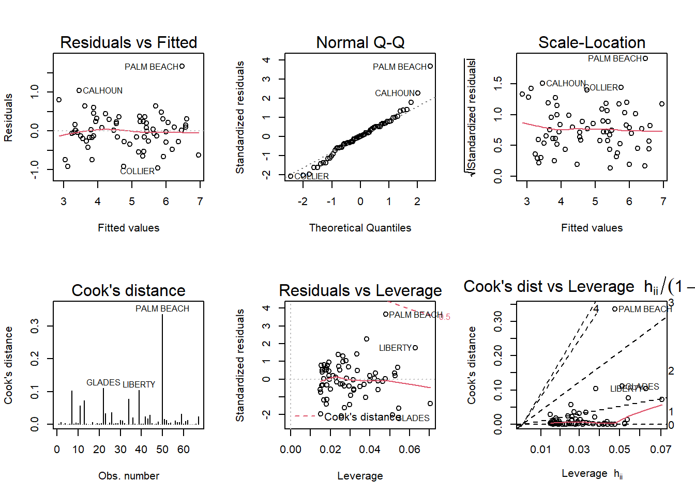

Warning: package 'tidyverse' was built under R version 4.1.3
-- Attaching packages --------------------------------------- tidyverse 1.3.2 --
v ggplot2 3.4.0 v purrr 0.3.5
v tibble 3.1.8 v dplyr 1.0.10
v tidyr 1.2.1 v stringr 1.5.0
v readr 2.1.3 v forcats 0.5.2
Warning: package 'ggplot2' was built under R version 4.1.3
Warning: package 'tibble' was built under R version 4.1.3
Warning: package 'tidyr' was built under R version 4.1.3
Warning: package 'readr' was built under R version 4.1.3
Warning: package 'purrr' was built under R version 4.1.3
Warning: package 'dplyr' was built under R version 4.1.3
Warning: package 'stringr' was built under R version 4.1.3
Warning: package 'forcats' was built under R version 4.1.3
-- Conflicts ------------------------------------------ tidyverse_conflicts() --
x dplyr::filter() masks stats::filter()
x dplyr::lag() masks stats::lag()
Code
library(MPV)
Warning: package 'MPV' was built under R version 4.1.3
Loading required package: lattice
Loading required package: KernSmooth
KernSmooth 2.23 loaded
Copyright M. P. Wand 1997-2009
Code
library(alr4)
Warning: package 'alr4' was built under R version 4.1.3
Loading required package: car
Warning: package 'car' was built under R version 4.1.3
Loading required package: carData
Warning: package 'carData' was built under R version 4.1.3
Attaching package: 'car'
The following object is masked from 'package:dplyr':
recode
The following object is masked from 'package:purrr':
some
Loading required package: effects
Warning: package 'effects' was built under R version 4.1.3
Use the command
lattice::trellis.par.set(effectsTheme())
to customize lattice options for effects plots.
See ?effectsTheme for details.
Code
library(smss)
Warning: package 'smss' was built under R version 4.1.3
Code
knitr::opts_chunk$set(echo =TRUE)
Question 1
Code
data(house.selling.price.2)house.selling.price.2
A
For backward elimination, you fit a model using all possible explanatory values to predict the output. Then one by one, you delete the least significant explanatory variable in the model, which would have the largest p-value. In this example, we would delete Beds first, which has a p-value of 0.487.
B
With forward selection, you begin with no explanatory variables, then add one variable at a time to the model. The variable you add should be the most significant one, based on it having the lowest P-value of the group of possible explanatory variables. In this example, the first variable to add to the model is Size, given its extremely small p-value < 2e-16.
C
While the variable Beds does have a strong correlation with price, when adding additional variables using a regression model, the relationship significantly diminishes, thus the other variables may act as a control on the bed variable.
D
Code
summary(lm(P ~ S, data = house.selling.price.2))
Call:
lm(formula = P ~ S, data = house.selling.price.2)
Residuals:
Min 1Q Median 3Q Max
-56.407 -10.656 2.126 11.412 85.091
Coefficients:
Estimate Std. Error t value Pr(>|t|)
(Intercept) -25.194 6.688 -3.767 0.000293 ***
S 75.607 3.865 19.561 < 2e-16 ***
---
Signif. codes: 0 '***' 0.001 '**' 0.01 '*' 0.05 '.' 0.1 ' ' 1
Residual standard error: 19.47 on 91 degrees of freedom
Multiple R-squared: 0.8079, Adjusted R-squared: 0.8058
F-statistic: 382.6 on 1 and 91 DF, p-value: < 2.2e-16
Code
summary(lm(P ~ S+New, data = house.selling.price.2))
Call:
lm(formula = P ~ S + New, data = house.selling.price.2)
Residuals:
Min 1Q Median 3Q Max
-47.207 -9.763 -0.091 9.984 76.405
Coefficients:
Estimate Std. Error t value Pr(>|t|)
(Intercept) -26.089 5.977 -4.365 3.39e-05 ***
S 72.575 3.508 20.690 < 2e-16 ***
New 19.587 3.995 4.903 4.16e-06 ***
---
Signif. codes: 0 '***' 0.001 '**' 0.01 '*' 0.05 '.' 0.1 ' ' 1
Residual standard error: 17.4 on 90 degrees of freedom
Multiple R-squared: 0.8484, Adjusted R-squared: 0.845
F-statistic: 251.8 on 2 and 90 DF, p-value: < 2.2e-16
Code
summary(lm(P ~ ., data = house.selling.price.2))
Call:
lm(formula = P ~ ., data = house.selling.price.2)
Residuals:
Min 1Q Median 3Q Max
-36.212 -9.546 1.277 9.406 71.953
Coefficients:
Estimate Std. Error t value Pr(>|t|)
(Intercept) -41.795 12.104 -3.453 0.000855 ***
S 64.761 5.630 11.504 < 2e-16 ***
Be -2.766 3.960 -0.698 0.486763
Ba 19.203 5.650 3.399 0.001019 **
New 18.984 3.873 4.902 4.3e-06 ***
---
Signif. codes: 0 '***' 0.001 '**' 0.01 '*' 0.05 '.' 0.1 ' ' 1
Residual standard error: 16.36 on 88 degrees of freedom
Multiple R-squared: 0.8689, Adjusted R-squared: 0.8629
F-statistic: 145.8 on 4 and 88 DF, p-value: < 2.2e-16
Code
summary(lm(P ~ . -Be, data = house.selling.price.2))
Call:
lm(formula = P ~ . - Be, data = house.selling.price.2)
Residuals:
Min 1Q Median 3Q Max
-34.804 -9.496 0.917 7.931 73.338
Coefficients:
Estimate Std. Error t value Pr(>|t|)
(Intercept) -47.992 8.209 -5.847 8.15e-08 ***
S 62.263 4.335 14.363 < 2e-16 ***
Ba 20.072 5.495 3.653 0.000438 ***
New 18.371 3.761 4.885 4.54e-06 ***
---
Signif. codes: 0 '***' 0.001 '**' 0.01 '*' 0.05 '.' 0.1 ' ' 1
Residual standard error: 16.31 on 89 degrees of freedom
Multiple R-squared: 0.8681, Adjusted R-squared: 0.8637
F-statistic: 195.3 on 3 and 89 DF, p-value: < 2.2e-16
Code
summary(lm(P ~ . -Be -Ba, data = house.selling.price.2))
Call:
lm(formula = P ~ . - Be - Ba, data = house.selling.price.2)
Residuals:
Min 1Q Median 3Q Max
-47.207 -9.763 -0.091 9.984 76.405
Coefficients:
Estimate Std. Error t value Pr(>|t|)
(Intercept) -26.089 5.977 -4.365 3.39e-05 ***
S 72.575 3.508 20.690 < 2e-16 ***
New 19.587 3.995 4.903 4.16e-06 ***
---
Signif. codes: 0 '***' 0.001 '**' 0.01 '*' 0.05 '.' 0.1 ' ' 1
Residual standard error: 17.4 on 90 degrees of freedom
Multiple R-squared: 0.8484, Adjusted R-squared: 0.845
F-statistic: 251.8 on 2 and 90 DF, p-value: < 2.2e-16
a. R^2
As expected, the model with the most explanatory variables has the highest R-squared value at 0.8689. Therefore, if you were to select a model solely based on maximizing the R-squared value, it would be: ŷ = -41.79 + 64.76(Size) - 2.77(Beds) + 19.2(Baths) + 18.98(New).
b. Adjusted R^2
However, if you were to select a model based on adjusted R-squared, the best model for predicting selling price would exclude Beds and use Size, Baths, and New as explanatory variables. The adjusted R-squared value see a slight increase when Beds is removed (from 0.8629 to 0.8637). The model would be: ŷ = -47.99 + 62.26(Size) + 20.07(Baths) + 18.37(New).
c. PRESS
Code
PRESS(lm(P ~ ., data = house.selling.price.2))
[1] 28390.22
Code
PRESS(lm(P ~ . -Be, data = house.selling.price.2))
[1] 27860.05
When considering PRESS, a smaller PRESS value indicates a better predictive model. Comparing the PRESS value of the model with all variables and the model excluding Bed, the PRESS values would lead us to select the model with Size, Baths, and New as variables for predicting selling price.
d. AIC
Code
AIC(lm(P ~ ., data = house.selling.price.2))
[1] 790.6225
Code
AIC(lm(P ~ . -Be, data = house.selling.price.2))
[1] 789.1366
When considering the AIC for both models, the value is slightly lower for the model that excludes Bed as a variable. Therefore, the AIC would lead us to use the model with Size, Baths, and New as explanatory variables to predicting selling price.
e. BIC
Code
BIC(lm(P ~ ., data = house.selling.price.2))
[1] 805.8181
Code
BIC(lm(P ~ . -Be, data = house.selling.price.2))
[1] 801.7996
Lastly, like AIC, the BIC value is lower for the model that excludes Bed as a variable. Once again, we’d select the model that uses Size, Baths, and New as explanatory variables to predict selling price.
E
Given the results from the various criteria above, the model I would prefer to use to predict selling price is that which excludes Bed and includes Size, Bath, and New as variables: ŷ = -41.79 + 64.76(Size) - 2.77(Beds) + 19.2(Baths) + 18.98(New). This is because each of the criterion indicate this model as slightly stronger in its predictive power than the model that includes all variables except R-squared, which cannot be used alone to determine model strength.
Question 2
Code
data("trees")trees
A
Code
model <-lm(Volume ~ Girth + Height, data = trees)summary(model)
Call:
lm(formula = Volume ~ Girth + Height, data = trees)
Residuals:
Min 1Q Median 3Q Max
-6.4065 -2.6493 -0.2876 2.2003 8.4847
Coefficients:
Estimate Std. Error t value Pr(>|t|)
(Intercept) -57.9877 8.6382 -6.713 2.75e-07 ***
Girth 4.7082 0.2643 17.816 < 2e-16 ***
Height 0.3393 0.1302 2.607 0.0145 *
---
Signif. codes: 0 '***' 0.001 '**' 0.01 '*' 0.05 '.' 0.1 ' ' 1
Residual standard error: 3.882 on 28 degrees of freedom
Multiple R-squared: 0.948, Adjusted R-squared: 0.9442
F-statistic: 255 on 2 and 28 DF, p-value: < 2.2e-16
B
Code
par(mfrow =c(2, 3)); plot(model, which =1:6)

Based on the residuals vs. fitted values plot, the central points appear to roughly bounce randomly above and below 0, but the lowest and highest point appear to be very influential residuals. The red line should be flat along 0 horizontally, but it is U-shaped. This curvature may suggest a violation in the linearity assumption. With the normal Q-Q plot, it’s difficult to confidently say that the assumption of normality appears to be violated. The points generally run along the trend-line, but they do deviate above the line for the higher points. It’s a noteworthy deviation, but it’s difficult to make a certain decision based on the plot. In the scale-location plot, the line is not horizontal, thus suggesting a violation in the assumption of constant variance. Cook’s distance suggests that the 31st observation is above the threshold, meaning it is too influential as one observation.
Question 3
Code
data("florida")florida
A
Code
model <-lm(formula = Buchanan ~ Bush, data = florida)summary(model)
Call:
lm(formula = Buchanan ~ Bush, data = florida)
Residuals:
Min 1Q Median 3Q Max
-907.50 -46.10 -29.19 12.26 2610.19
Coefficients:
Estimate Std. Error t value Pr(>|t|)
(Intercept) 4.529e+01 5.448e+01 0.831 0.409
Bush 4.917e-03 7.644e-04 6.432 1.73e-08 ***
---
Signif. codes: 0 '***' 0.001 '**' 0.01 '*' 0.05 '.' 0.1 ' ' 1
Residual standard error: 353.9 on 65 degrees of freedom
Multiple R-squared: 0.3889, Adjusted R-squared: 0.3795
F-statistic: 41.37 on 1 and 65 DF, p-value: 1.727e-08
Code
par(mfrow =c(2, 3)); plot(model, which =1:6)

Based on the diagnostic plots, Palm Beach County is an outlier. First, when looking at the residuals vs fitted plot, the Palm Beach County residual is very large. When referring to the summary of the simple regression model, the third quartile for residuals is 12.26, yet the max is 2610.19. This is a significant jump and indicative of the value being an outlier. The normal Q-Q plot also indicates that the residuals for the model are generally normal except for the Palm Beach County residual, as it greatly deviates from the line in the plot. The Cook’s distance plot shows two points that may be of concern as outliers if you follow the metric of observations scoring over 1, which are DADE and Palm Beach at about 2. The residuals and leverages plot shows the Palm Beach County standardized residual value beyond the dashed line indicating Cook’s distance. This also suggests that the observation is an outlier and the observation has the potential to influence the regression model.
B
Code
model <-lm(formula =log(Buchanan) ~log(Bush), data = florida)summary(model)
Call:
lm(formula = log(Buchanan) ~ log(Bush), data = florida)
Residuals:
Min 1Q Median 3Q Max
-0.96075 -0.25949 0.01282 0.23826 1.66564
Coefficients:
Estimate Std. Error t value Pr(>|t|)
(Intercept) -2.57712 0.38919 -6.622 8.04e-09 ***
log(Bush) 0.75772 0.03936 19.251 < 2e-16 ***
---
Signif. codes: 0 '***' 0.001 '**' 0.01 '*' 0.05 '.' 0.1 ' ' 1
Residual standard error: 0.4673 on 65 degrees of freedom
Multiple R-squared: 0.8508, Adjusted R-squared: 0.8485
F-statistic: 370.6 on 1 and 65 DF, p-value: < 2.2e-16
Code
par(mfrow =c(2, 3)); plot(model, which =1:6)

Based on the diagnostic plots, Palm Beach County is still an outlier. First, when looking at the residuals vs fitted plot, the Palm Beach County residual is still very large. The normal Q-Q plot also indicates that the residuals for the model are generally normal except for the Palm Beach County residual, as it greatly deviates from the line in the plot. The Cook’s distance plot shows that may be of concern as outlier if you follow the metric of observations scoring over 0.2, which is Palm Beach at about 0.3. The residuals and leverages plot shows the Palm Beach County standardized residual value beyond the dashed line indicating Cook’s distance. This also suggests that the observation is an outlier and the observation has the potential to influence the regression model.
Source Code
---title: "Homework 5"author: "Mani Kanta Gogula"description: "HW_5"date: "12/9/2022"format: html: df-print: paged css: styles.css toc: true code-fold: true code-copy: true code-tools: truecategories: - hw5 - Mani Kanta Gogula---```{r}library(tidyverse)library(MPV)library(alr4)library(smss)knitr::opts_chunk$set(echo =TRUE)```## Question 1```{r}data(house.selling.price.2)house.selling.price.2```## AFor backward elimination, you fit a model using all possible explanatory values to predict the output. Thenone by one, you delete the least significant explanatory variable in the model, which would have the largestp-value. In this example, we would delete `Beds` first, which has a p-value of 0.487.## BWith forward selection, you begin with no explanatory variables, then add one variable at a time to the model.The variable you add should be the most significant one, based on it having the lowest P-value of the group ofpossible explanatory variables. In this example, the first variable to add to the model is `Size`, given itsextremely small p-value < 2e-16.## CWhile the variable Beds does have a strong correlation with price, when adding additional variables using aregression model, the relationship significantly diminishes, thus the other variables may act as a control onthe bed variable.## D```{r}summary(lm(P ~ S, data = house.selling.price.2))summary(lm(P ~ S+New, data = house.selling.price.2))summary(lm(P ~ ., data = house.selling.price.2))summary(lm(P ~ . -Be, data = house.selling.price.2))summary(lm(P ~ . -Be -Ba, data = house.selling.price.2))```### a. R^2As expected, the model with the most explanatory variables has the highest R-squared value at 0.8689. Therefore, if you were to select a model solely based on maximizing the R-squared value, it would be: ŷ = -41.79 + 64.76(Size) - 2.77(Beds) + 19.2(Baths) + 18.98(New).### b. Adjusted R^2However, if you were to select a model based on adjusted R-squared, the best model for predicting selling price would exclude Beds and use Size, Baths, and New as explanatory variables. The adjusted R-squared value see a slight increase when Beds is removed (from 0.8629 to 0.8637). The model would be: ŷ = -47.99 + 62.26(Size) + 20.07(Baths) + 18.37(New).### c. PRESS```{r}PRESS(lm(P ~ ., data = house.selling.price.2))PRESS(lm(P ~ . -Be, data = house.selling.price.2))```When considering PRESS, a smaller PRESS value indicates a better predictive model. Comparing the PRESS value of the model with all variables and the model excluding Bed, the PRESS values would lead us to select the model with Size, Baths, and New as variables for predicting selling price.### d. AIC```{r}AIC(lm(P ~ ., data = house.selling.price.2))AIC(lm(P ~ . -Be, data = house.selling.price.2))```When considering the AIC for both models, the value is slightly lower for the model that excludes Bed as a variable. Therefore, the AIC would lead us to use the model with Size, Baths, and New as explanatory variables to predicting selling price.### e. BIC```{r}BIC(lm(P ~ ., data = house.selling.price.2))BIC(lm(P ~ . -Be, data = house.selling.price.2))```Lastly, like AIC, the BIC value is lower for the model that excludes Bed as a variable. Once again, we’d select the model that uses Size, Baths, and New as explanatory variables to predict selling price.## EGiven the results from the various criteria above, the model I would prefer to use to predict selling price is that which excludes Bed and includes Size, Bath, and New as variables: ŷ = -41.79 + 64.76(Size) - 2.77(Beds) + 19.2(Baths) + 18.98(New). This is because each of the criterion indicate this model as slightly stronger in its predictive power than the model that includes all variables except R-squared, which cannot be used alone to determine model strength.## Question 2```{r}data("trees")trees```## A```{r}model <-lm(Volume ~ Girth + Height, data = trees)summary(model)```## B```{r}par(mfrow =c(2, 3)); plot(model, which =1:6)```Based on the residuals vs. fitted values plot, the central points appear to roughly bounce randomly above and below 0, but the lowest and highest point appear to be very influential residuals. The red line should be flat along 0 horizontally, but it is U-shaped. This curvature may suggest a violation in the linearity assumption. With the normal Q-Q plot, it’s difficult to confidently say that the assumption of normality appears to be violated. The points generally run along the trend-line, but they do deviate above the line for the higher points. It’s a noteworthy deviation, but it’s difficult to make a certain decision based on the plot. In the scale-location plot, the line is not horizontal, thus suggesting a violation in the assumption of constant variance. Cook’s distance suggests that the 31st observation is above the threshold, meaning it is too influential as one observation.## Question 3```{r}data("florida")florida```## A```{r}model <-lm(formula = Buchanan ~ Bush, data = florida)summary(model)``````{r}par(mfrow =c(2, 3)); plot(model, which =1:6)```Based on the diagnostic plots, Palm Beach County is an outlier. First, when looking at the residuals vs fitted plot, the Palm Beach County residual is very large. When referring to the summary of the simple regression model, the third quartile for residuals is 12.26, yet the max is 2610.19. This is a significant jump and indicative of the value being an outlier. The normal Q-Q plot also indicates that the residuals for the model are generally normal except for the Palm Beach County residual, as it greatly deviates from the line in the plot. The Cook’s distance plot shows two points that may be of concern as outliers if you follow the metric of observations scoring over 1, which are DADE and Palm Beach at about 2. The residuals and leverages plot shows the Palm Beach County standardized residual value beyond the dashed line indicating Cook’s distance. This also suggests that the observation is an outlier and the observation has the potential to influence the regression model.## B```{r}model <-lm(formula =log(Buchanan) ~log(Bush), data = florida)summary(model)``````{r}par(mfrow =c(2, 3)); plot(model, which =1:6)```Based on the diagnostic plots, Palm Beach County is still an outlier. First, when looking at the residuals vs fitted plot, the Palm Beach County residual is still very large. The normal Q-Q plot also indicates that the residuals for the model are generally normal except for the Palm Beach County residual, as it greatly deviates from the line in the plot. The Cook’s distance plot shows that may be of concern as outlier if you follow the metric of observations scoring over 0.2, which is Palm Beach at about 0.3. The residuals and leverages plot shows the Palm Beach County standardized residual value beyond the dashed line indicating Cook’s distance. This also suggests that the observation is an outlier and the observation has the potential to influence the regression model.